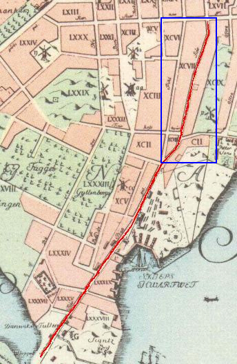

Södermalm i tid och rum

Tillaeus karta från 1733. Väster är uppåt och öster nedåt på kartan.
Ur Stockholms gatunamn Tjärhovsgatan Tjärhovsplan Öster om Renstiernas Gata Panorama omkr 1870 Karta 2000
Tjärhovsgatan (Tiärehåfhz gathun 1645), som tidigare sträckte sig längre öster
ut, på Tillaeus' karta 1733 till Danvikstull, har efter hand »uppslukats» av Folkungagatan och når nu endast fram
till Renstiernas Gata (från väster räknat). Den tidigare bussterminalen mellan Renstiernas Gata och Borgmästargatan fick 1968
namnet Tjärhovsplan.
Tjärhovsgatan har fått namn efter Tjärhovet (Stadzens Tiärhååff 1648, Tiärhåffwett 1650) som låg »nedanför
berget åt Tegelviken» (Elers). Byggandet av denna anläggning hade börjat 1640. Tjärhov är en gammal
benämning på »de förr under officiell kontroll stående lokaler, i vilka tjära, spec. för exportändamål, 'vräktes', d.
v. s. befriades från de sista resterna av vattenhaltiga avsättningar (tjärpärman), varav en del härefter kokades till
beck». Här magasinerades också den tjära som skulle exporteras. År 1646 omtalas »Tierebodherne» och 1650
»Tiährhåffzbyggian». Den del av Åsöberget nedanför vilken tjärhovet låg kallas 1671 »Tiäruhoffs berget». I
tjärhovets omgivningar har tjärhovsdrängar,tjärhovsskrivare och tjärvräkare varit tomtägare.
År 1686 anhöll överståthållaren, att Kungl. Maj:t »i nåder skulle tillåta, ett Skeppshvarfs inrättande på
Tjärhofvet». Man framhöll att Beckholmen lämpligen i stället kunde utnyttjas såsom tjärhov.